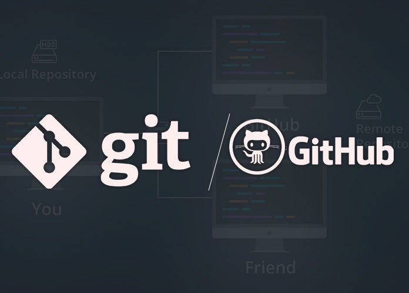

Most used git commands
28 Sep,2021

So, as a dev every one of us be it a beginner or a working professional, has used git or know about it. We all know what its purpose is, if not let me give you a small introduction of what git exactly is.

But first let me tell you one important difference, as most of the beginners seem to confuse between git and github, as I myself did.
So, the difference is that git is a version control and github is a software hosting website. Yes, both works together but has a different features and agenda. So, keeping that in mind lets move forward.
Git:
Git is a version control as I mentioned earlier, what it means is that
git helps us keep track of the changes we make in our project and make a
checkpoint for every changes we save using git commit, so that we can
roll back our project to any checkpoint if there is any issue. Which is
quite powerful and useful. So, that's the reason why I would like to
share some of the most used git commands in every day work, which I use
everyday.
So, here is the list:
1. git init
This is use to initialize an empty git repository in your new or
existing project. This is the first command to be used before you can do
anything else with git.
c:\my project\git init
2. git status
This is use to check the status of the project saved in git repository.
eg: It will show you which branch you are currently on, the changes you made recently,
which changes you have staged for commit etc.
c:\my project\git status
3. git add
It stages or adds all the recent changes to be committed.
Which is saving a checkpoint for your recent changes.
//This "." after add is for adding all the changes together.
c:\my project\git add .
3. git add
It stages or adds all the recent changes to be committed.
Which is saving a checkpoint for your recent changes.
//This "." after add is for adding all the changes together.
c:\my project\git add .
4. git commit
It is used to create a checkpoint of your changes so to be able to track your changes and revert your project to any checkpoint if needed so. You need to add a commit message along with it for identification, which is very useful.
c:\my project\git commit -m "message for your commit"
5. git push
It is used to push all your tracked and saved changes of your project you made using commit to a remote repository which would be github. Then you can check your project in github and see all the changes you made.
//git push "remote_URL/remote_name" "branch"
c:\my project\git push origin master
6. git pull
It is used to pull or get all the changes from a remote repository to your local repository so that you are update with the changes in remote repo or your repositories are in sync.
c:\my project\git pull
7. git remote
It is used to link or connect local repository with remote repository using the command add,
only after linking remote repo you can push your changes to github and save it there for further usage.
You can also check if there is any repository linked to your project by using the command "git remote -v".
If there is no repo linked then it will return blank else the url will be displayed.
//To check remote url links
c:\my project\git remote -v
//To add remote url
git remote add origin https://github.com/devraj-alt/my-project.git